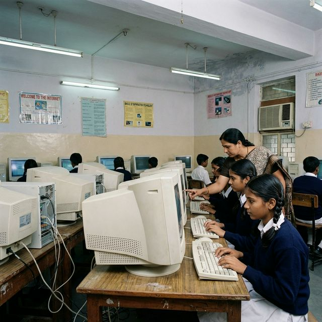
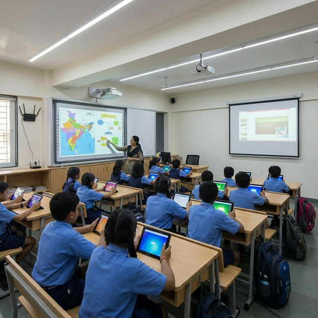
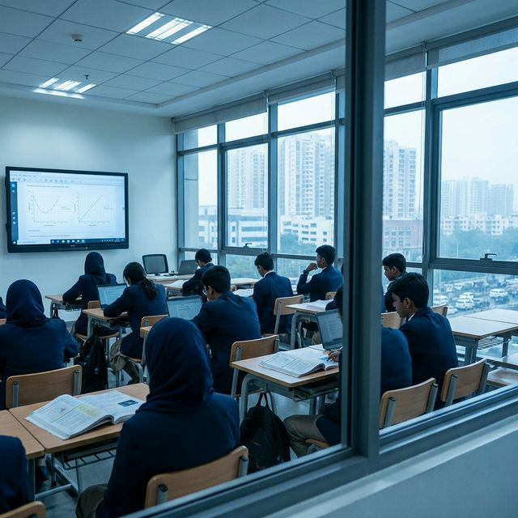
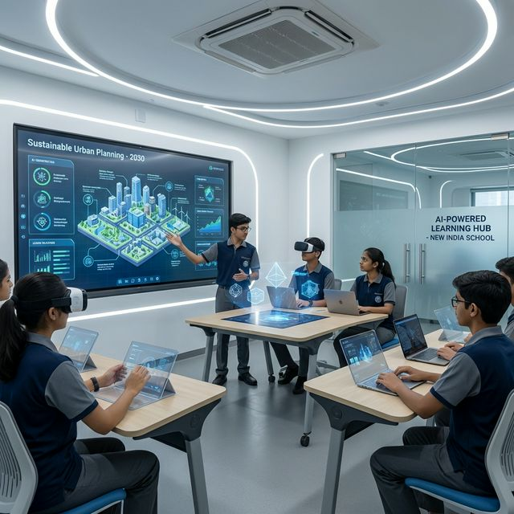
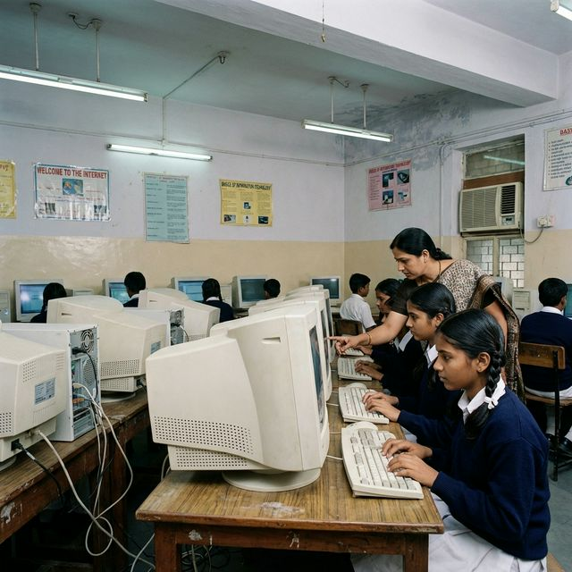
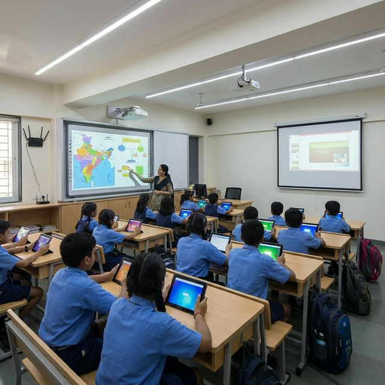
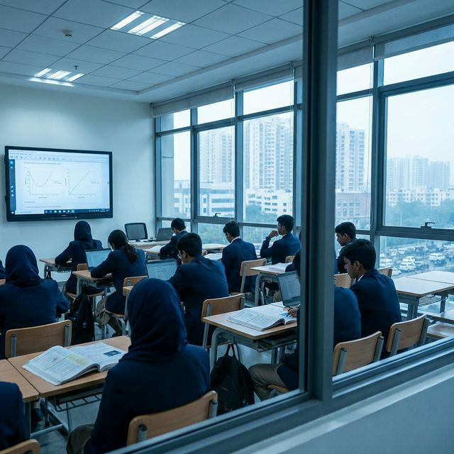
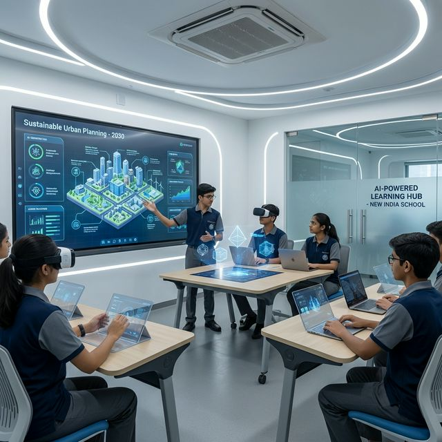

The Digital Divide Begins
The internet arrived. But not everywhere. And not equally.
Urban India
0%
Internet penetration
Computer labs becoming standard in urban schools. Government introduces ICT@Schools program. Cyber cafés and early broadband connections. Private schools adopt digital learning tools.
Rural India
0%
Internet penetration
Only 56% of rural schools have electricity. No computers, no internet access. Teacher absenteeism at 25%. Mid-day meal scheme drives enrollment, but quality remains poor.